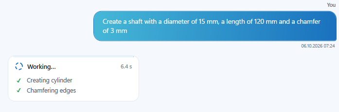
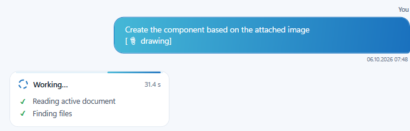
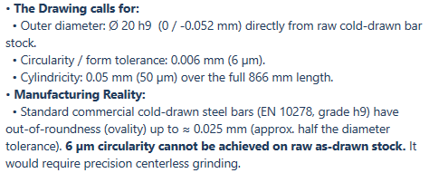
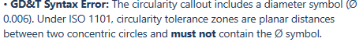
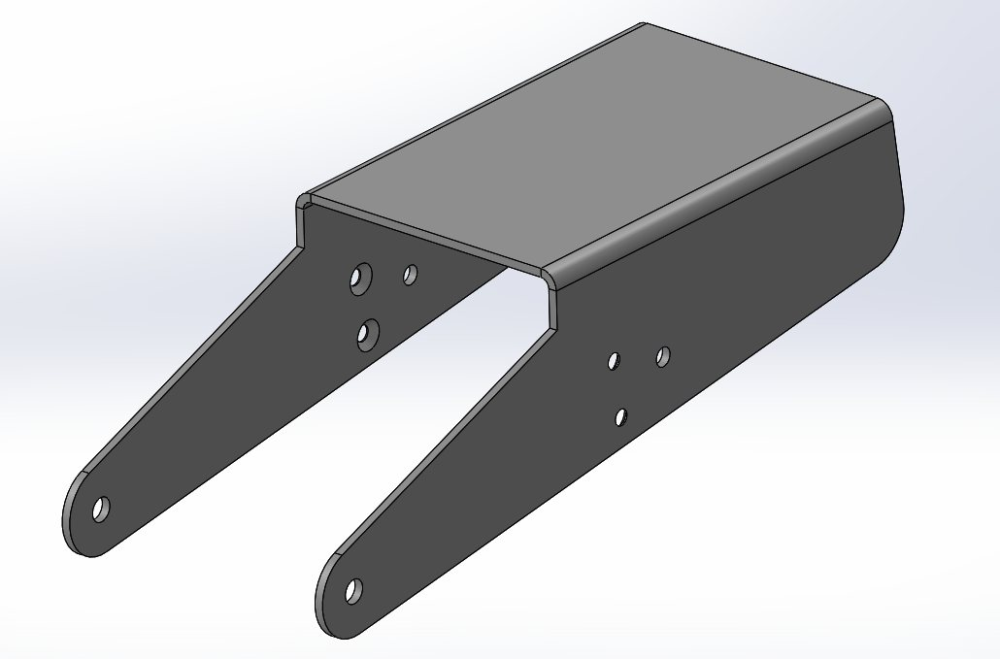
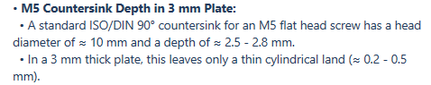

CASE 01
Modeling from a plain-language prompt
Part2.SLDPRT · Ø15 × 120›Create a shaft with a diameter of 15 mm, a length of 120 mm and a chamfer of 3 mm



Unedited screenshots of Axion answers on production drawings and models. Only the part names are anonymized.











Click any screenshot to enlarge.
No. Modeling is one feature. The main value is connecting your data: reading live geometry and drawings, checking standards and manufacturability, estimating cost and reusing existing parts.
Yes. Templates, sheet formats, materials, rules and data sources for checks are set up for your company, so results match how you work.
The one you use. Axion is a native add-in with its own panel and we build it for the SOLIDWORKS version running in your company.
Book a demo. We'll show Axion on your own parts and drawings and set it up for your standards.
Write to us and we'll set up a demo on your parts, drawings and company standards.